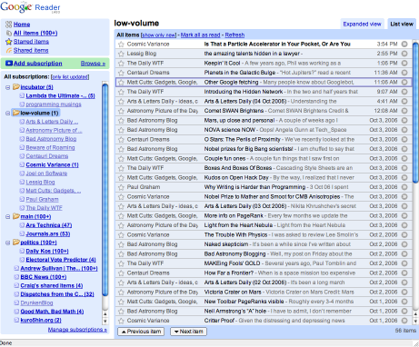
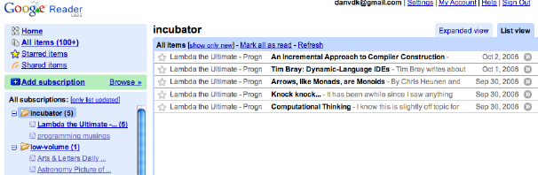

10.04.06
Review of Google Reader
As promised, my review of the new Google Reader. There are a number of others out there… I’ve read Matt Cutts and Scoble so I’ll try not to hit on their points.
Before the new Reader came out, I’d been using NetNewsWire for about a month and a half. NNW uses the very-standard three pane interface, which I’ve configured to be fully horizontal. Vertical screen space is precious on a widescreen laptop, so this just feels right.

My main pet peeve: when I’ve clicked on a folder, I want NNW to show me all the items in that folder! The list should be completely chronological, and it should include both read and unread items. The read items give me a sense of where I’ve been in this list before. I shouldn’t have to reestablish which articles I’ve passed on every time I update my feeds. I searched as hard as I could, even posted a question on the NNW forums, but apparently NNW just can’t do this.

In short, the new Reader wins! Read and unread items all appear together in a nice chronological list.
The old reader combined every item in every feed into one list, the “river of news” that other bloggers seem so fond of talking about. I couldn’t stand this. It’s just not the way I read my feeds. There are a few feeds that don’t get much traffic, about a post a day, but I read them religiously. And then there are others, with dozens of posts a day, that I occasionally peruse when I’m bored. The two should be separate. In the river of news, my low-volume feeds would drown. The new reader is unquestionably an improvement over the old.
I really like the list view, which combines two of the traditional panes. It feels less cramped than the three-pane view. In all fairness, NNW can do this too:

Unfortunately, this view in NNW wastes tons of vertical space. Even with all the stories collapsed, it can only show six at a time. Google Reader fits thirty. This is a big win for Reader.
In list view, Reader looks spectacularly similar to Gmail. There’s been plenty of speculation about a Gmail/Reader merger, and I could certainly imagine this happening. One of the main reasons I love Gmail is the keyboard shortcuts: j/k (up/down), u (previous view), and g i (go to inbox). Reader has some similar keystrokes. j/k still go up and down in a list, but they automatically expand every story they select. Remember, I don’t necessarily read everything in all my feeds! This behavior makes the keys worthless. The n/p keys do what I want, but as a vi user, they just don’t feel natural.
In some ways, however, Reader has better keyboard support than Gmail. Example: hit ‘g t’

It supports auto-complete, so I can hit “l <enter>” to go to my low-volume folder. This is a really cool way to navigate, and I wish Gmail had it! I think they got the visuals from the Gmail Macros Greasemonkey script. (I may be completely off here) I’d use that script, but it kills “g i” going to my inbox.
I said my “low-volume” folder, but is it a folder or a tag? This is one of the stranger things in Reader. It seems that if you put a whole feed into a container, then that container is a folder. But if you put an individual item in it, it’s a tag. There’s no difference between the two. A tag is a folder is a tag in Reader. The split terminology doesn’t serve any purposes. Just pick folders or tags. I’d go with “tags,” since each feed/item can have multiple tags. That doesn’t make sense in a folder world.
A few other nits:

There’s tons of unread stories in these two feeds. Why only the five new stories from one of the feeds? Shades of NetNewsWire. I’ve got a bug filed on this. Also:

Why aren’t the stories on the home page clickable!?
Reader 2 is an enormous improvement over the old Reader, and it’s already begun to replace NetNewsWire in my regular surfing. I’m excited about subscribing to other people’s shared items feeds, so be sure to import your OPML file into Google Reader and give it a try!
Update: Here’s a link to my shared items.
Proto said,
October 7, 2006 at 7:52 am
Hello danvk,
This is Proto from India. That was a pretty good review of the Reader, a tool I love using. Hope you would have read this excellent review by Gina Trapani of Lifehacker:
http://www.lifehacker.com/software/google-reader/geek-to-live-from-bloglines-to-google-reader-205786.php
I would like to point out one thing about the GMail macros script. There is a stupid way by which you can retain your favorite “g i” combination. Refrain from naming labels starting with “I”. I know it sounds stupid (but I have been religiously doing that for an year or more now), but it does give you satisfaction that you can have the cake and eat it too. Believe me, if you are not using GMail macros, you are really missing something quite useful and beautiful :).
Regards,
Proto
http://protoiyer.wordpress.com